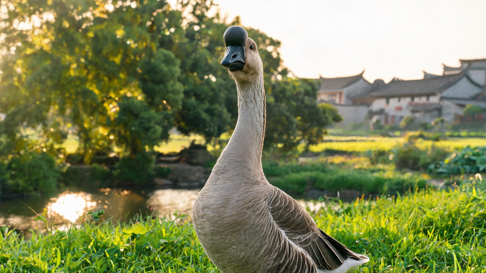
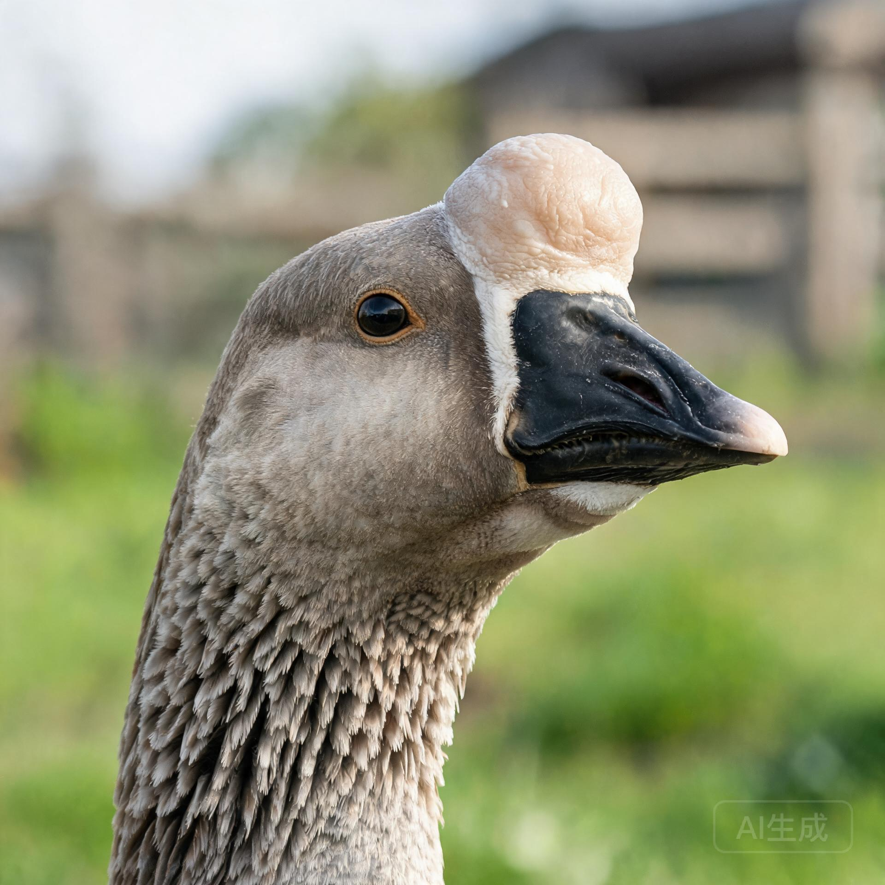
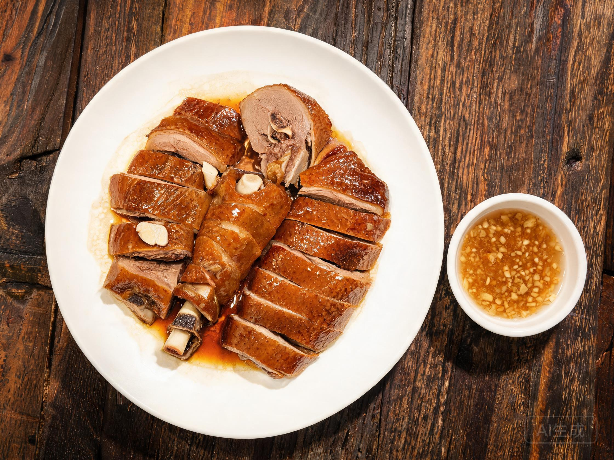
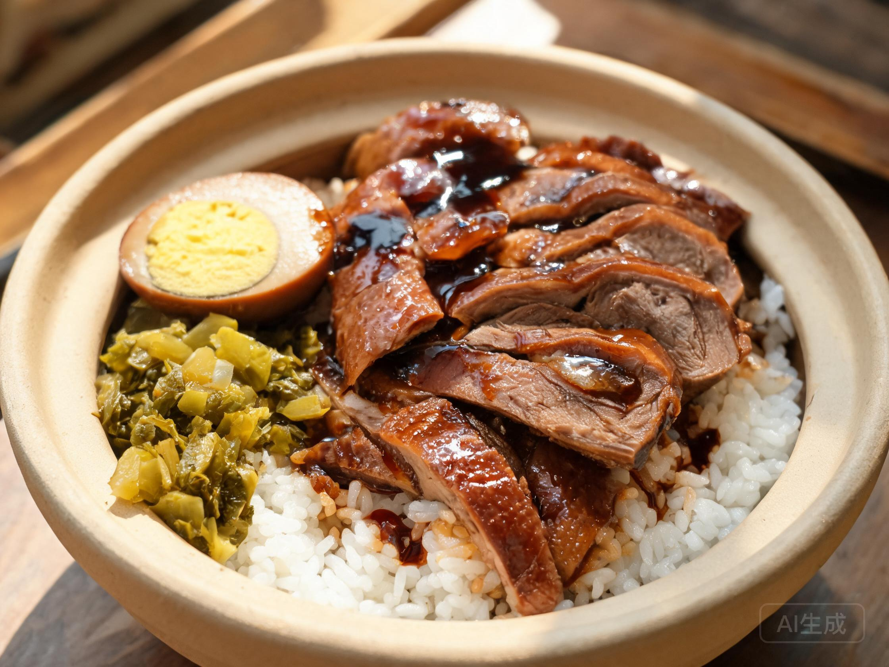
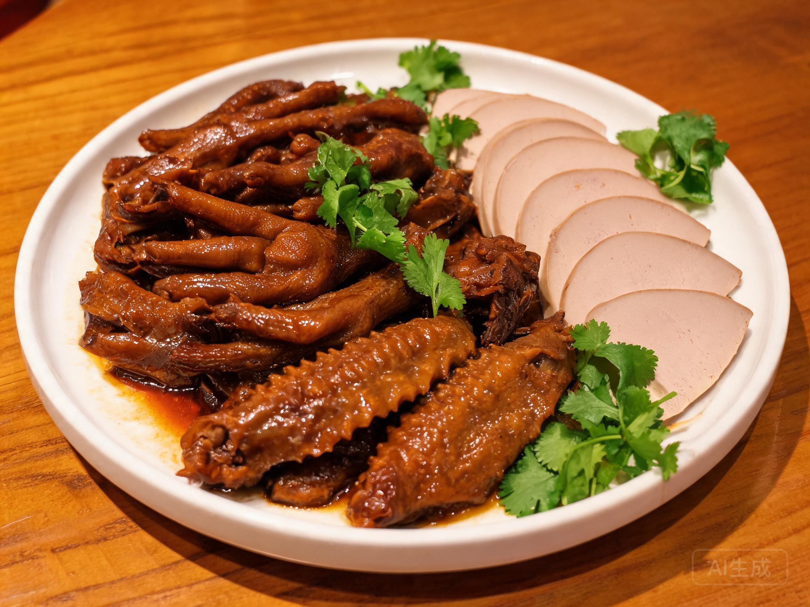

喜水善泳
原产地溪河池塘密布，鹅群每日下水洗浴、交配与消暑。水面活动能清洁羽毛、帮助散热，但雏鹅需先适应浅水。
广东 · 潮州 · 饶平
WORLD GOOSE KING
头似狮、体如舟，我国体型最大的鹅种。三百余年养殖史，只为一只卤鹅的琥珀油亮。

世界鹅王狮头鹅因头部肉瘤形似狮头而得名，原产于潮州市饶平县浮滨镇一带的溪河丘陵，是我国体型最大的鹅种，也是世界上少有的大型鹅种之一。
它头大颈粗、体躯宽深呈方形，胸宽背阔，站立时昂首挺胸。头顶肉瘤与颌下咽袋发达，公鹅尤为突出，并随年龄增长继续增大；喙短而宽、呈黑色，胫与蹼粗壮，多为橙黄色。
全身羽毛以灰褐色为主，腹部羽色较浅，翅羽硬挺。成年公鹅体重 10–12 公斤，母鹅 8–9 公斤，个别特大型公鹅可超过 15 公斤。
“头似狮、颈如弓、体如舟、掌如桨。”——潮汕人对狮头鹅的形貌概括

头顶肉瘤隆起，颌下咽袋下垂，公鹅格外明显，年龄越大越显威猛。
体躯宽深近方形，胸肌饱满，颈粗而短，站姿沉稳有力。
全身灰褐色羽毛，腹羽浅白，翅羽坚实有光泽，耐湿耐晒。
喙短宽呈黑色，胫蹼粗壮、橙黄鲜亮，划水有力，善走耐牧。
原产地溪河池塘密布，鹅群每日下水洗浴、交配与消暑。水面活动能清洁羽毛、帮助散热，但雏鹅需先适应浅水。
喜结群行动，放牧时由“头鹅”带队，采食、休息、归巢步调一致。单独饲养易应激，群养更安稳。
以青草、水草、菜叶为主，搭配谷物、糠麸即可育肥。食量大、消化力强，饲料成本相对低廉。
适应南方湿热气候，抗病力较强、耐粗放管理；但怕闷热潮湿与高密度，栏舍需通风干燥。
警觉性高、听觉灵敏，公鹅护群意识强。陌生人或野兽靠近时会高声鸣叫，乡下常被当作“看家鹅”。
母鹅就巢性强，年产蛋 25–35 枚，蛋重约 200 克，孵化期约 30–31 天。种蛋多靠母鹅自然抱孵或人工孵化。
※ 示意图，纵轴以 12 公斤为上限；个体体重受性别、饲料与管理影响。
| 阶段 | 公鹅 | 母鹅 | 养殖要点 |
|---|---|---|---|
| 出壳 | 0.13 kg | 0.13 kg | 保温防湿，先饮水后开食 |
| 30 日龄 | 1.6 kg | 1.5 kg | 羽翼初成，可短时放牧 |
| 60 日龄 | 4.2 kg | 3.8 kg | 进入增重最快的阶段 |
| 90 日龄 | 6.0 kg | 5.2 kg | 多数肉鹅在此前后出栏 |
| 120 日龄 | 8.0 kg | 6.8 kg | 骨架定型，转入育肥或留种 |
| 成年（7–8 月） | 10–12 kg | 8–9 kg | 选留种鹅，肉瘤充分发育 |
狮头鹅 60–90 日龄增重最猛，在精料配青料的条件下料肉比约 2.5–3 : 1；养足 120 天以上的“老鹅”肉质更紧实，是卤鹅的上选。
潮汕人讲“无鹅不成宴”，逢年过节、祭祖拜神，桌心必有一只卤鹅。澄海苏南卤鹅最负盛名：以南姜、香茅、八角、桂皮、蒜头、鱼露与冰糖熬成卤水，整鹅下锅慢火浸卤，皮亮肉香、骨里透味。

整鹅卤熟后斩件，皮色枣红透亮、肥而不腻。蘸一碟蒜泥醋，卤香与酸香相互提亮，鹅头鹅颈胶质最厚。

卤鹅片铺在热饭上，配酸菜、卤蛋，再淋一勺卤汁。肉香、饭香与卤香混在一起，是潮汕街头的招牌快餐。

鹅掌鹅翅筋多胶厚，越嚼越香；狮头鹅体型大、肝叶肥厚，卤鹅肝绵密油润，是潮汕卤味里的“隐藏菜单”。
卤鹅讲究“热卤冷切”，放凉后逆纹切薄片，皮肉相连才够香；配蒜泥醋解腻提鲜。
看皮色枣红透亮、按下去有弹性、卤香自然不刺鼻；鹅掌要选筋粗皮厚的，胶质更足。
白切鹅蘸普宁豆酱吃本味；鹅杂滚汤撒芹菜粒与胡椒粉；鹅肉丸、鹅肉粿条则是日常小食。